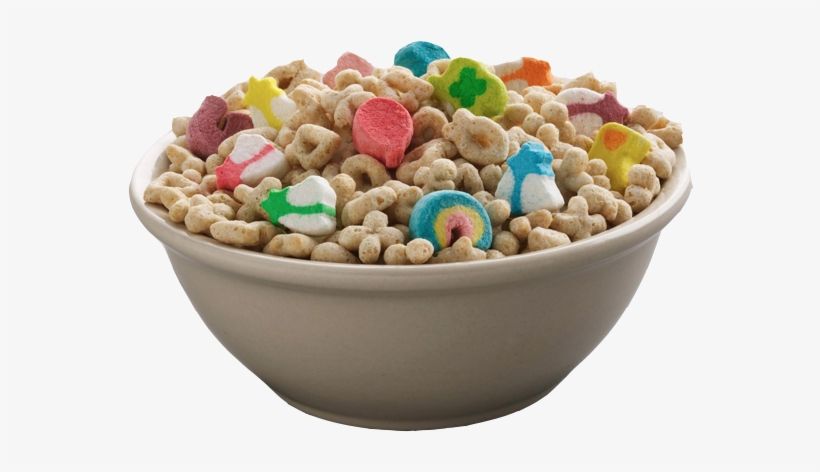

Cereal Recipe

Cereal ... with milk? True innovation.
An all-american staple, I will show you how to make cereal here.
Cinnamon Toast or cheerios is preferred, but you can substitute whatever you like.
Ingredients:
- Cereal of your preference (preferrably sugar-laden)
- Milk or equivalent
- Bowl and Spoon
Recipe Instructions:
- Put cereal in bowl
- Put milk in the same bowl
- Eat it.
Back to Main Page